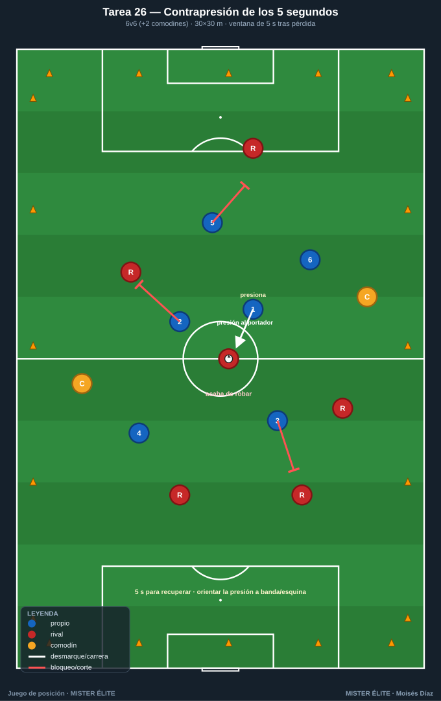
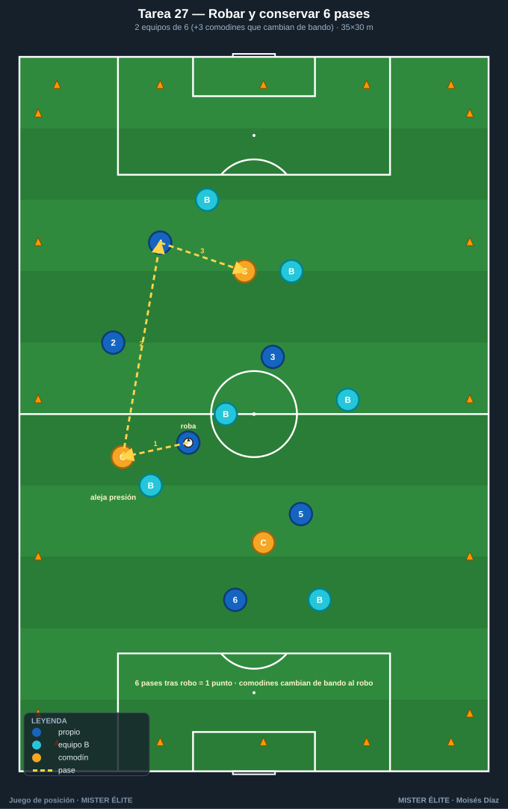
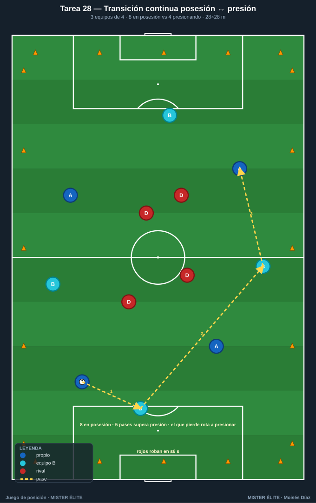
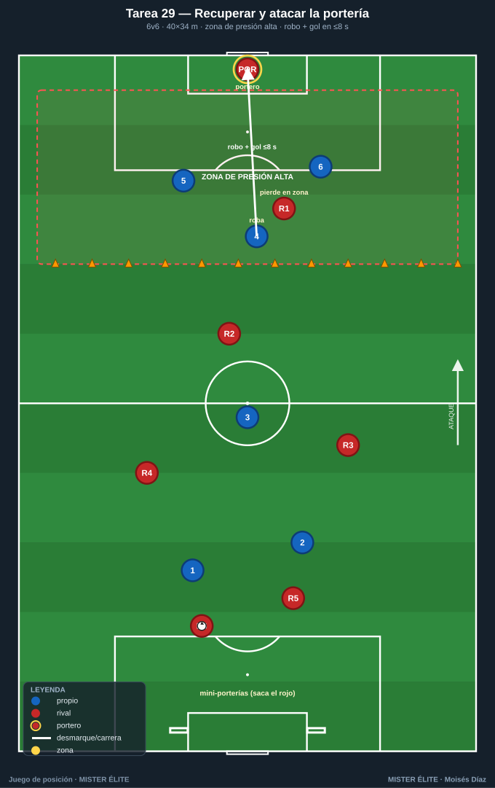
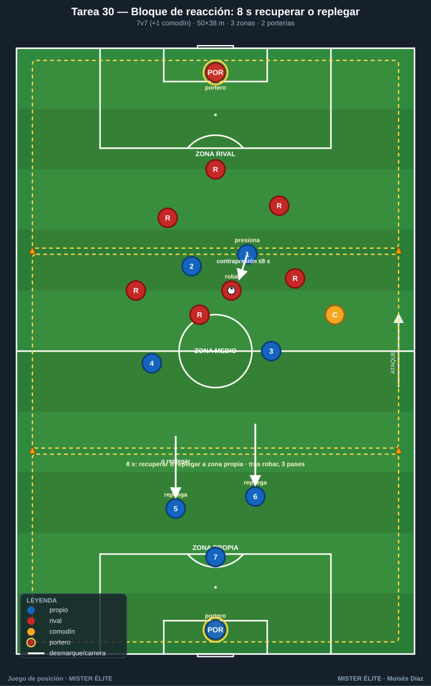

Familia 6 · Posesión defensiva: recuperar y conservar (T26–30)
Notación: poseedores azules, defensores/recuperadores rojos, comodines ámbar, 2.º equipo poseedor azul-cian. La posesión incluye qué hacer al perderla: contrapresión inmediata, conservar tras robar y decidir presionar o replegar. La misma estructura que ataca bien recupera rápido.
Tarea 26 — Contrapresión de los 5 segundos (recuperar tras pérdida)
Objetivo. Reaccionar de inmediato tras perder; recuperar el balón en ≤5 s con presión coordinada al poseedor y a los apoyos.
Organización. - Relación: 6v6 + 2 comodines (ámbar, con el poseedor). Cuadrado. - Medidas: 30×30 m. - Material: petos, conos de límite, cronómetro visible / silbato del coach, balones en los 4 lados. Sin portería.

Desarrollo. Posesión normal del equipo azul (con comodines) frente a los rojos. En el instante de la pérdida, el coach activa el cronómetro: el equipo que perdió tiene 5 s para recuperar = punto de contrapresión. Si el equipo que robó aguanta 5 s (o saca por uno de los 4 lados con pase controlado), gana el punto de "supera la presión".
Provocaciones (medibles). - Cronómetro explícito de 5 s desde la pérdida (el coach cuenta en voz alta o silba). - Recuperación en ≤5 s = 1 punto; recuperación con el balón en la misma zona donde se perdió = 2 puntos. - "Superar la presión" (aguantar 5 s o sacarla limpia) = 1 punto para ellos.
Variantes (fácil → difícil). 1. Fácil: 7 s de ventana. 2. Media: 5 s (base). 3. Difícil: 4 s y campo más grande (35×35).
Coaching. - Reacción inmediata del más cercano (presión al portador) + tapar líneas de los apoyos. - "Pressing trap": orientar la presión hacia la banda/esquina. - Si no se recupera en el tiempo, replegar ordenado.
Duración. 4 series de 4 min, 90 s descanso. ≈ 22 min.
Tarea 27 — Robar y conservar 6 pases (transición a posesión)
Objetivo. Premiar la conservación inmediata tras robar: que el robo se convierta en posesión estable, no en pérdida apresurada.
Organización. - Relación: 2 equipos de 6 + 3 comodines neutrales (ámbar) que siempre juegan con quien acaba de robar. - Medidas: 35×30 m. - Material: petos (2 colores + 3 ámbar), conos, balones de reposición. Sin portería.

Desarrollo. Posesión disputada. Cuando un equipo roba, los 3 comodines pasan a jugar con él (superioridad de conservación). Objetivo del que roba: encadenar 6 pases tras el robo para sumar punto. Si lo pierde antes, los comodines cambian de bando al instante.
Provocaciones (medibles). - 6 pases seguidos tras robo = 1 punto (el contador reinicia con cada pérdida). - Si el primer pase tras robar es progresivo y se mantiene = punto extra (robar para atacar). - Comodines máximo 2 toques.
Variantes (fácil → difícil). 1. Fácil: 8 pases pero 3 comodines fijos con un mismo equipo (más estable). 2. Media: base (comodines cambian con el robo). 3. Difícil: solo 2 comodines y objetivo de 8 pases.
Coaching. - Primer movimiento tras robar: alejar el balón de la presión (apoyos rápidos alrededor del que roba). - Decidir conservar vs atacar según la posición del rival al perder. - Calma tras el robo: asegurar el primer pase antes de acelerar.
Duración. 4 series de 4 min. ≈ 22 min.
Tarea 28 — Transición continua posesión ↔ presión (3 equipos rotativos)
Objetivo. Entrenar el cambio constante de rol poseedor ↔ recuperador; reaccionar tanto al perder (contrapresión) como al robar (conservar).
Organización. - Relación: 3 equipos de 4 (azul, azul-cian, rojo). Dos equipos juntan posesión (8) contra 4 que presionan. - Medidas: 28×28 m. - Material: 3 juegos de petos diferenciados, conos, balones en lados. Sin portería.

Desarrollo. Los dos equipos en posesión (8) circulan ante el presionante (4). El equipo que pierde el balón baja a presionar; el que presionaba entra a posesión con el otro. Mientras presionan, robar en ≤6 s; mientras poseen, superar la presión con 5 pases.
Provocaciones (medibles). - Equipo presionante: robo en ≤6 s desde que entra = 1 punto (cronómetro por ciclo). - Equipo en posesión: 5 pases sin que el presionante toque = 1 punto. - El equipo que provoca la pérdida siempre rota a presionar (regla clara y medible).
Variantes (fácil → difícil). 1. Fácil: media presión (rojos a trote) para asentar la mecánica. 2. Media: base. 3. Difícil: ventana de robo de 5 s y campo a 26×26.
Coaching. - Reacción mental al cambio de rol: del que ataca al que presiona sin transición lenta. - En presión: tapar primero el pase de progresión, luego al portador. - En posesión: el equipo aliado ofrece apoyos para "no quedarse 4 solos".
Duración. 4 series de 4 min, 2 min descanso. ≈ 24 min.
Tarea 29 — Recuperar y atacar la portería (contrapresión que termina en gol)
Objetivo. Vincular la recuperación inmediata con la finalización: robar arriba y atacar la portería antes de que el rival se ordene.
Organización. - Relación: 6v6, 1 portería con portero en un fondo; en el opuesto, 2 mini-porterías (sin portero). - Medidas: 40×34 m con una zona de presión alta de 15 m delante de la portería con portero. - Material: portería + portero, 2 mini-porterías, conos de zona, petos, balones.

Desarrollo. El equipo rojo "saca" desde su fondo (mini-porterías) e intenta progresar; el azul presiona. Si los azules roban dentro de la zona de presión alta, disponen de 8 s para finalizar en la portería con portero. Si roban fuera, primero meten el balón en la zona y luego finalizan (el reloj cuenta desde el robo en zona).
Provocaciones (medibles). - Robo en zona alta + gol en ≤8 s = 2 puntos (contrapresión productiva). - Robo + gol fuera de tiempo o construido lento = 1 punto. - Si el rojo supera la zona de presión con el balón controlado, suma 1 punto y ataca las mini-porterías (premia salir jugando bajo presión).
Variantes (fácil → difícil). 1. Fácil: zona de presión de 18 m, 10 s para finalizar. 2. Media: base (15 m, 8 s). 3. Difícil: zona de 12 m, 6 s, y un rojo más para salir (6v7 en defensa).
Coaching. - Activar la presión sobre el gatillo (pase malo, control orientado hacia su portería). - Tras el robo: balón directo a portería, no toque de más. - Equilibrio: 1-2 jugadores cubren la transición rival a mini-porterías.
Duración. 5 series de 3,5 min, 90 s descanso. ≈ 24 min.
Tarea 30 — Bloque de reacción: 8 segundos para recuperar o replegar (síntesis defensiva)
Objetivo. Tarea de cierre que integra la decisión completa tras pérdida: recuperar en contrapresión o replegar ordenado, según el cronómetro; conservar tras robar.
Organización. - Relación: 7v7 + 1 comodín (ámbar, con el poseedor) en formato direccional. 2 porterías con portero. - Medidas: 50×38 m en 3 zonas (propia, medio, rival). - Material: 2 porterías + 2 porteros, conos de 3 zonas, petos + 1 ámbar, cronómetro del coach, balones.

Desarrollo. Partido direccional 7v7+comodín, foco en el momento de la pérdida: - Al perder en zona rival o media, el equipo dispone de 8 s para recuperar (contrapresión); si lo logra, mantiene ataque y puede finalizar. - Si no recupera en 8 s, debe replegar a su propia zona (todos cruzan a su mitad) antes de volver a robar; recuperar tras repliegue también puntúa, pero menos.
Tras cualquier robo, 3 pases obligatorios antes de poder finalizar (asegurar la conservación post-robo).
Provocaciones (medibles). - Cronómetro explícito de 8 s tras pérdida en campo rival/medio. - Recuperación por contrapresión (≤8 s) que termina en gol = 3 puntos. - Recuperación tras repliegue ordenado = 1 punto; gol normal = 1 punto. - Robar y no dar los 3 pases de conservación antes de finalizar = gol anulado.
Variantes (fácil → difícil). 1. Fácil: 10 s de ventana y sin obligación de repliegue total. 2. Media: base (8 s, repliegue obligatorio). 3. Difícil: 6 s, repliegue obligatorio y 2 comodines para el que defiende mejor la salida.
Coaching. - Decisión presionar vs replegar en función de cobertura y distancia al balón. - Coordinación de la contrapresión: portador + apoyos + líneas de pase. - Tras robar, asegurar (3 pases) y luego buscar la finalización: equilibrio recuperar–conservar–atacar.
Duración. 3 bloques de 6 min, 2 min descanso. ≈ 24 min.
MISTER ÉLITE — Moisés Díaz · Familia 6 · Posesión defensiva: recuperar y conservar.